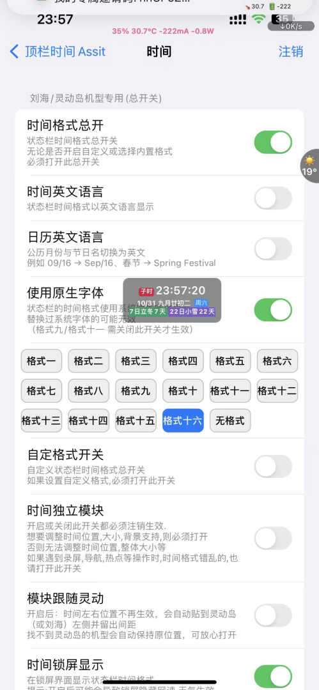
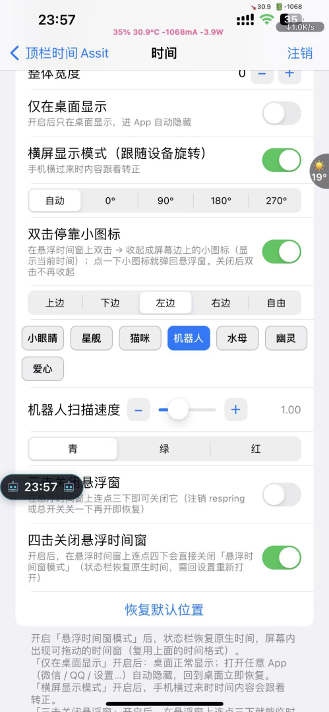
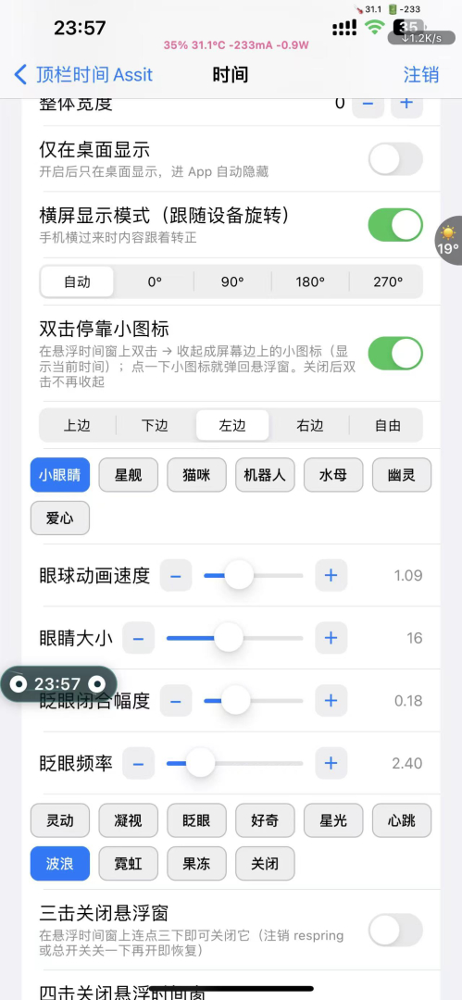
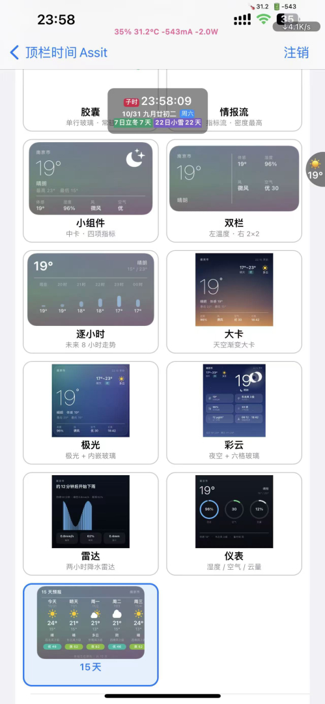

这是什么
顶栏时间 Assist 接管你的状态栏时间显示，并提供一组悬浮窗、停靠小图标、动画主题与天气小组件。
它把「状态栏时间格式」「悬浮时间窗」「边缘停靠小图标」「眼睛 / 形象动画」「天气小组件」整合到一个设置入口，
所有开关即时生效，少数需要「注销 / respring」的会在说明里标注。
依赖：mobilesubstrate、preferenceloader。支持 Dopamine 等 rootless 越狱。
界面一览

① 状态栏时间格式 · 17 种内置格式 + 自定义；支持中英文切换、锁屏显示、跟随灵动岛；可单独调宽度、字体与位置。

② 悬浮时间窗与停靠小图标 · 在悬浮时间窗上「双击」可收起成屏幕边缘的小图标（显示当前时间），点一下弹回；位置可选 上 / 下 / 左 / 右 / 自由，并支持横屏跟随旋转。

③ 眼睛动画与形象 · 眼睛大小、眨眼闭合幅度、眨眼频率、动画速度均可调；动效含 灵动 / 凝视 / 眨眼 / 好奇 / 星光 / 心跳 / 波浪 / 霓虹 / 果冻 / 关闭。

④ 天气小组件样式 · 胶囊 / 双栏 / 中长四项 / 大卡渐变 / 逐小时 / 彩云 / 极光 / 仪表 / 雷达 / 15 天 等十余种样式任选。
使用介绍
1 · 状态栏时间格式
- 先打开 「时间格式总开关」（无论用内置还是自定义都必须开）。
- 从 17 种内置格式里选一个（如「格式十六」显示 时辰 + 公历 + 农历 + 节气倒数）。
- 想要更花哨就打开 「自定格式」 自己写格式串；想要更细的位置 / 大小 / 背景控制，打开 「时间独立模块」（改完需注销生效）。
- 刘海 / 灵动岛机型可开 「模块跟随灵动」，时间会自动贴到灵动岛左侧并留出间距。
2 · 悬浮时间窗 & 停靠小图标
- 打开 「悬浮时间窗」 后，屏幕会出现一个可拖动的时间气泡。
- 开启 「双击停靠小图标」：在气泡上双击→ 收起成边缘小图标；点一下小图标 → 弹回气泡。
- 停靠位置：上 / 下 / 左 / 右 / 自由；开启 「横屏显示模式」 后，横过来内容自动转正。
3 · 动画主题与眼睛
- 形象选择：小眼睛 / 星舰 / 猫咪 / 机器人 / 水母 / 幽灵 / 爱心，共 7 种，默认是小眼睛。
- 选「小眼睛」时，下方显示眼睛专属设置：眼睛大小、眨眼闭合幅度、眨眼频率、动画速度，以及 10 种眼动效。
- 选其它形象时，只显示该形象自己的设置（如星舰的航速 / 配色、猫咪的活跃度 / 毛色），互不干扰。
4 · 天气小组件
- 在天气设置里挑选组件样式（胶囊、双栏、大卡渐变、逐小时、极光、雷达、15 天等）。
- 多数样式即时生效；若长时间不刷新，回到设置重开一次总开关即可。
怎么关掉悬浮窗？ 在悬浮时间窗上「连点三下」可临时关闭；「连点四下」会直接关闭悬浮窗模式（状态栏恢复原生时间）。
遇到显示异常，注销（respring）或把对应总开关关一下再开即可恢复。
更新日志
v0.9.98
修复「点击果冻主题当场死机 / 崩溃」；新增 6 个造型主题（星舰 / 猫咪 / 机器人 / 水母 / 幽灵 / 爱心），每个主题有独立配置且设置页按主题动态显示；
霓虹升级为彩色霓虹；「关闭」动效移到列表末尾。
v0.9.97
新增 5 个动画主题；新增 眼睛大小 / 眨眼闭合幅度 / 眨眼频率 三个可调滑块（与原有动画速度相乘）。
v0.9.96
修复横屏全屏 App（如王者）内小图标丢失、竖屏网速窗不显示；新增眼球动效与速度设置。
更早版本持续修复横屏停靠、坐标空间、动画抖动等问题。